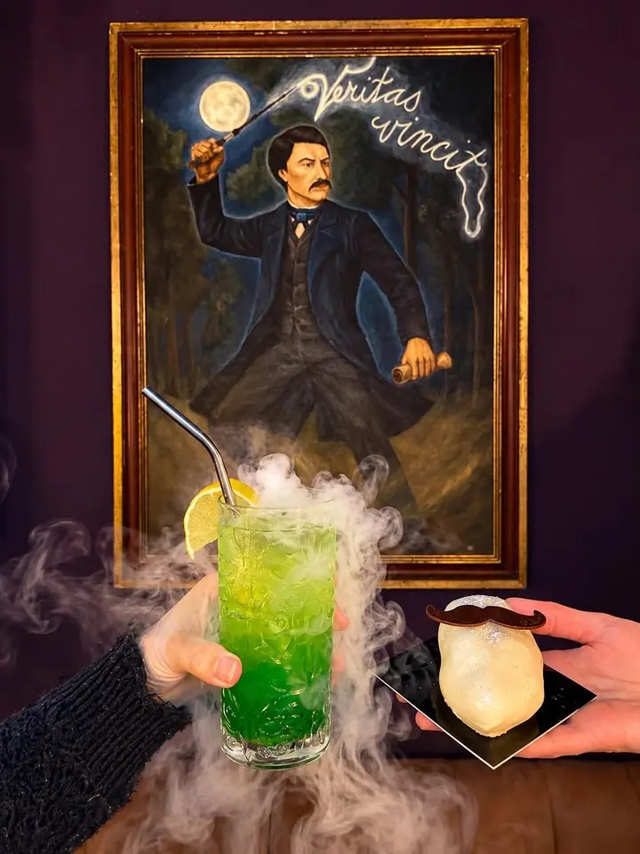
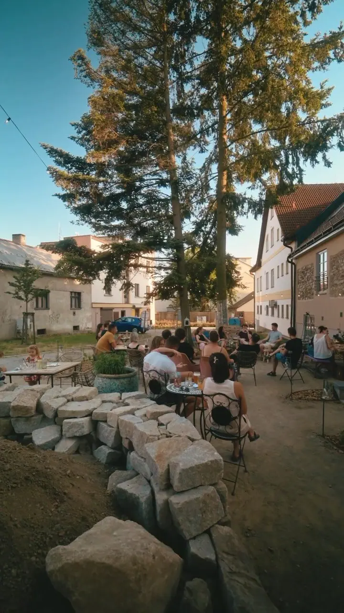
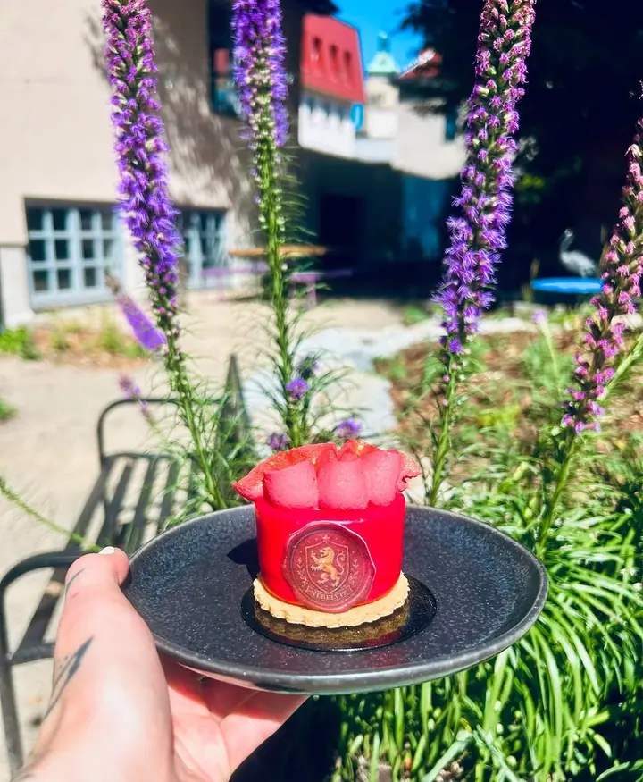
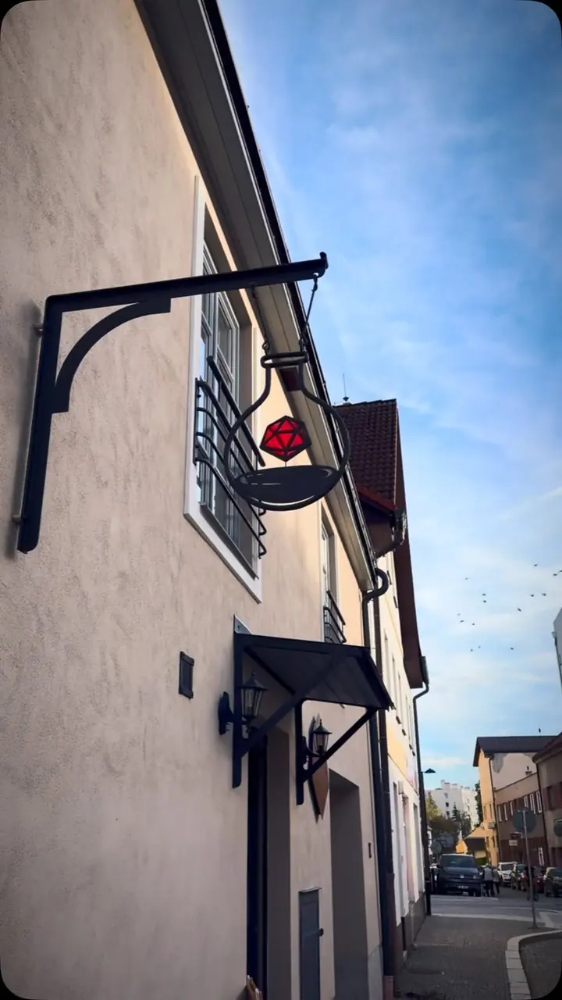
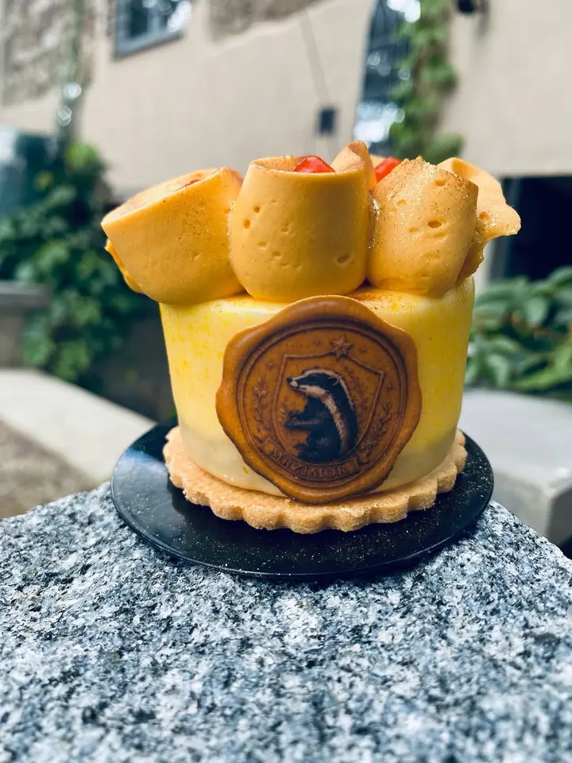
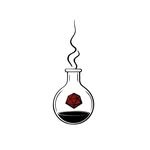

AlchyMy
Fotky, které pracují za vaši firmu
Zeptat se na termín →(01) Ahoj
Jmenuji se AlchyMy a fotím lidi a jejich příběhy v Havlíčkově Brodě i všude, kam mě pozvete. Nejradši mám chvíle, které se nedají naaranžovat : smích mezi dvěma pózami, pohled, který trvá vteřinu .
4 115lidí sleduje mou práci na Instagramu
110příspěvků s fotkami a příběhy
(02) Co fotím
Focení, které má příběh
(04) Postup
Jak to probíhá
Od první zprávy po hotovou galerii.
-
1
Krok 1 z 4
Napíšete mi
Pár vět o tom, co si představujete, a termín, který se vám hodí. Ozvu se vám zpátky.
-
2
Krok 2 z 4
Domluvíme detaily
Místo, čas, oblečení i harmonogram. Pošlu tipy, aby bylo focení v pohodě i pro ty, kdo se před foťákem stydí.
-
3
Krok 3 z 4
Focení
Procházka, povídání a pár hodin bez spěchu. S pózami pomůžu, zbytek přijde sám.
-
4
Krok 4 z 4
Hotové fotky
Upravené fotky dostanete v online galerii, v plném rozlišení a připravené ke stažení i tisku.
Fotky, ke kterým se budete vracet
(05) Za objektivem
Ahoj, jsem AlchyMy
Prostor na pomezí světů v Havlíčkově Brodě
Nemám rád strojené pózy. Radši vás nechám být sami sebou a hledám momenty, které se stanou jen jednou: pohled, smích, ruku, která se natáhne po té druhé.
Fotím v Havlíčkově Brodě a v okolí, ale rád přijedu kamkoliv. Před focením se vždycky potkáme nebo zavoláme, abychom se znali dřív, než vytáhnu foťák.

AlchyMy
AlchyMy · Kavárna, ne fotograf
Jak dlouho dopředu se ozvat?
Obvykle stačí pár týdnů. Nejžádanější jsou víkendy a podzimní termíny, ty se plní nejdřív.
Kdy dostaneme fotky?
Upravené fotky posílám v online galerii, odkud si je stáhnete v plném rozlišení. Přesný termín vám řeknu předem.
Jezdíte i mimo Havlíčkův Brod?
Ano, fotím po celé republice. Dopravu domluvíme předem, ať nejsou žádná překvapení.
Co když se před foťákem stydíme?
To je úplně normální. Navedu vás, co dělat s rukama i kam se dívat, a po pár minutách to půjde samo.
(07) Kontakt
Pojďme to naplánovat
Napište pár vět o tom, co si představujete, a termín, který se vám hodí.
kavarna@alchymy.cz- Instagram @alchy_my
- Havlíčkův Brod